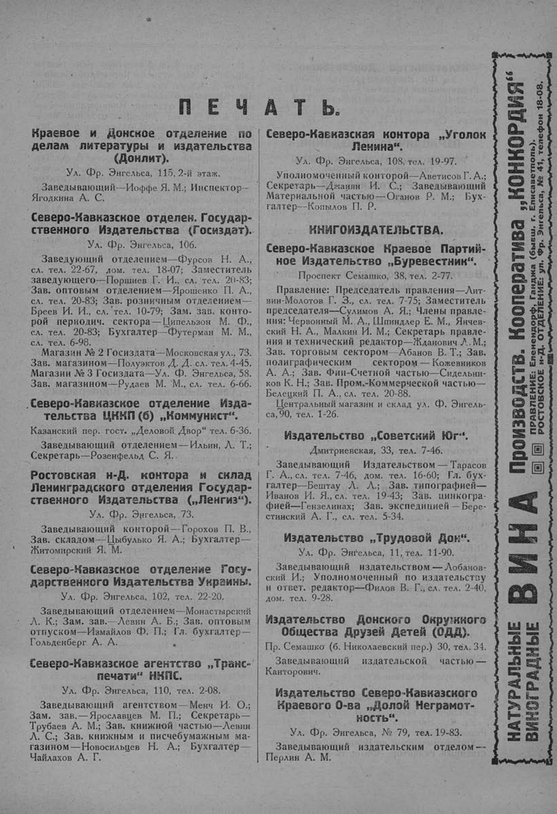

Лист источника 159
Скан

Распознанный текст
П Е Ч А Т Ь.
Краевое и Донское отделение по
делам литературы и издательства
(Донлит).
Ул. Фр. Энгельса, 115, 2-й этаж.
Заведывающий—Иоффе Я. М.; Инспектор—
Ягодкина А. С.
Северо-Кавказское отделен. Государ-
ственного Издательства (Госиздат).
Ул. Фр. Энгельса, 106.
Заведующий отделением—Фурсов Н. А.,
сл. тел. 22-67, дом. тел. 18-07; Заместитель
заведующего—Поршнев Г. И., сл. тел. 20-83;
Зав. оптовым отделением—Ярошенко П. А.,
сл. тел. 20-83; Зав. розничным отделением—
Бреев И. И., сл. тел. 10-79; Зам. зав. конто-
рой периодич. сектора—Ципельзон М. Ф.,
сл. тел. 20-83; Бухгалтер—Футерман М. М.,
сл. тел. 6-98.
Магазин № 2 Госиздата—Московская ул., 73.
Зав. магазином—Полуэктов Д. Д. сл. тел. 4-45.
Магазин № 3 Госиздата—Ул. Ф. Энгельса, 58.
Зав. магазином—Рудаев М. М., сл. тел. 6-66.
Северо-Кавказское отделение Изда-
тельства ЦККП (б) „Коммунист“.
Казанский пер. гост. „Деловой Двор“ тел. 6-36.
Заведывающий отделением—Ильин, Л. Т.;
Секретарь—Розенфельд С. Я..
Ростовская н-Д. контора и склад
Ленинградского отделения Государ-
ственного Издательства („Ленгиз“).
Ул. Фр. Энгельса, 73.
Заведывающий конторой—Горохов П. В.,
Зав. складом—Цыбулько Я. А.; Бухгалтер—
Житомирский Я. М.
Северо-Кавказское отделение Госу-
дарственного Издательства Украины.
Ул. Фр. Энгельса, 102, тел. 22-20.
Заведывающий отделением—Монастырский
Л. К.; Зам. зав.—Левин А. Б.; Зав. оптовым
отпуском—Измайлов Ф. П.; Гл. бухгалтер—
Гольденберг А. А.
Северо-Кавказское агентство „Транс-
печати“ НКПС.
Ул. Фр. Энгельса, 110, тел. 2-08.
Заведывающий агентством—Менч И. О.;
Зам. зав.—Ярославцев М. П.; Секретарь—
Трубаев А. М.; Зав. книжной частью—Левин
Л. С.; Зав. книжным и писчебумажным ма-
газином—Новосильцев Н. А.; Бухгалтер—
Чайлахов А. Г.
Северо-Кавказская контора „Уголок
Ленина“.
Ул. Фр. Энгельса, 108, тел. 19-97.
Уполномоченный конторой—Аветисов Г. А.;
Секретарь—Джанян И. С.; Заведывающий
Материальной частью—Оганов Р. М.; Бух-
галтер—Копылов П. Р.
КНИГОИЗДАТЕЛЬСТВА.
Северо-Кавказское Краевое Партий-
ное Издательство „Буревестник“.
Проспект Семашко, 38, тел. 2-77.
Правление: Председатель правления—Лит-
вин-Молотов Г. З., сл. тел. 7-75; Заместитель
председателя—Сулимов А. Я.; Члены правле-
ния: Червонный М. А., Шпиндлер Е. М., Янчев-
ский Н. А., Малкин И. М.; Секретарь правле-
ния и технический редактор—Жданович Л. М.;
Зав. торговым сектором—Абанов В. Т.; Зав.
полиграфическим сектором—Кожевников
А. А.; Зав. Фин-Счетной частью—Сидельни-
ков К. Н.; Зав. Пром.-Коммерческой частью—
Белецкий П. А., сл. тел. 20-88.
Центральный магазин и склад ул. Ф. Энгель-
са, 90, тел. 1-26.
Издательство „Советский Юг“.
Дмитриевская, 33, тел. 7-46.
Заведывающий Издательством—Тарасов
Г. А., сл. тел. 7-46, дом. тел. 16-60; Гл. бух-
галтер—Бештау Л. Л.; Зав. типографией—
Иванов И. Я., сл. тел. 19-43; Зав. цинкогра-
фией—Гензелинах; Зав. экспедицией—Бере-
стинский А. Г., сл. тел. 5-34.
Издательство „Трудовой Дон“.
Ул. Фр. Энгельса, 11, тел. 11-90.
Заведывающий издательством—Лобанов-
ский И.; Уполномоченный по издательству
и ответ. редактор—Филов В. Г., сл. тел. 2-40,
дом. тел. 9-28.
Издательство Донского Окружного
Общества Друзей Детей (ОДД).
Пр. Семашко (б. Николаевский пер.) 30, тел. 34.
Заведывающий издательской частью—
Канторович.
Издательство Северо-Кавказского
Краевого О-ва „Долой Неграмот-
ность“.
Ул. Фр. Энгельса, № 79, тел. 19-83.
Заведывающий издательским отделом—
Перлин А. М.
НАТУРАЛЬНЫЕ
ВИНОГРАДНЫЕ
ВИНА
ПРОИЗВОДСТВ. Кооператива „КОНКОРДИЯ“
ПРАВЛЕНИЕ: Елениендорф, Ганджа (бывш. г. Елисаветполь).
РОСТОВСКОЕ н-Д. ОТДЕЛЕНИЕ: ул. Фр. Энгельса, № 41, телефон 18-08.